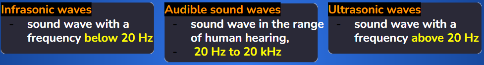
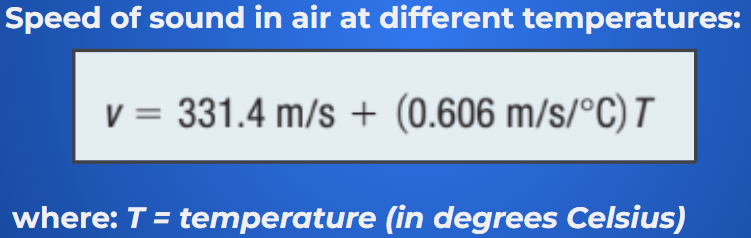
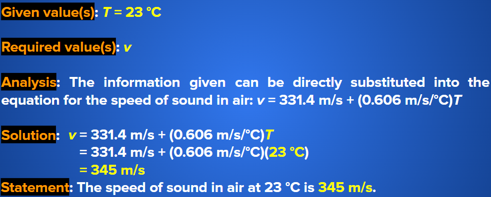
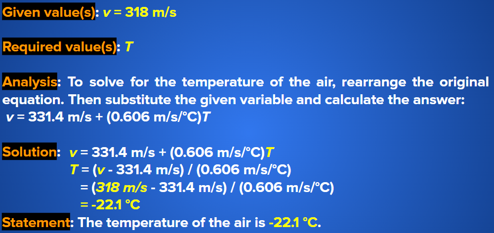
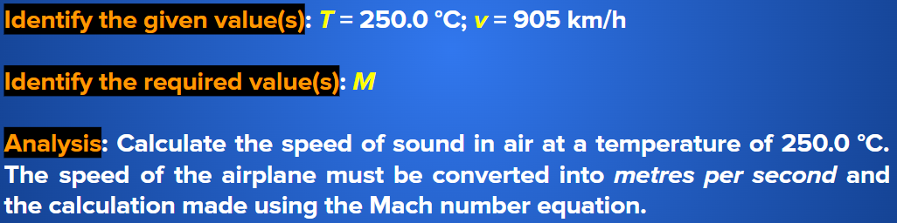
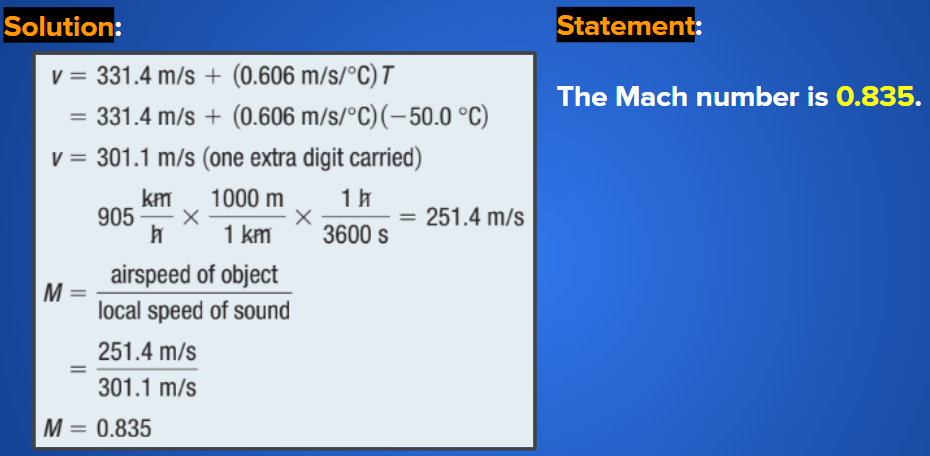

Properties of Sound Waves
Categories of Sound Waves
Sound waves fall into three categories covering different ranges of frequencies.

Applications of Ultrasonic Waves
Ultrasonic waves (ultrasound) are widely used in medical applications, both as a diagnostic tool and in certain treatments.
Physicians commonly use ultrasound to observe fetuses. This technique presents far less risk than using X-rays, which deposit more energy in cells and can produce birth defects.
Another application of ultrasound is the ultrasonic ranging unit used in some cameras. This unit provides an almost instantaneous measurement of the distance between the camera and the object to be photographed.

This ultrasound image shows a healthy fetus, about 6 months old.
Speed of Sound
Speed of sound through air depends on the density of the air and its temperature.
This value increases by 0.606 m/s for every increase of 1 °C

ExampleThe temperature outside is 23 °C. What is the speed of sound in air at this temperature?  |
ExampleIf the speed of sound is measured to be 318 m/s, what is the current air temperature?  |
Mach Number
Ernst Mach (1838–1916), an Austrian physicist, researched sound waves and devised a way to describe air speeds of objects in terms of the speed of sound.
Mach number (M)
the ratio of the airspeed of an object to the local speed of sound
Note that the ratio has no units. For this reason, when describing the speed of an object using the Mach number, we say Mach 1, Mach 2, and so on. Mach 1, for instance, means that the object is travelling at the speed of sound.

Ernst Mach (1838 - 1916)
ExampleAn aircraft is flying at 905 km/h in air at the temperature 250.0 °C. Calculate the Mach number associated with this speed.   |
PracticeIf the local speed of sound is 344 m/s and an aircraft is flying at 910 km/h, what is the Mach number? |
Sound Intensity
the amount of sound energy being transferred per unit area
the units of sound intensity are watts per square metre, or W/m^2
Pressure (p)
the force per unit area
Mathematically, p = F/A
In terms of sound intensity, the threshold of hearing ranges from about 1 X 10^-12 W/m^2 to about 1 W/m^2 — a range of approximately 12 magnitudes.
decibel (dB)
the unit of sound level used to describe sound intensity level
The decibel is one-tenth of a bel, symbol B.
This unit is named in honour of Alexander Graham Bell, the inventor of the telephone.
When using decibels, we refer to sound level, instead of sound intensity.

Alexander Graham Bell (1847 - 1922)
Loudness and Distance
You will have noticed that the farther you are from a sound, the quieter it becomes. As a sound wave expands from its source, the total energy it carries stays about the same, but the area of air that it acts upon increases greatly with distance.
Therefore, the energy per unit area decreases, and your ear detects a quieter sound.

Sound Safety
Any sound levels greater than 100 dB that persist for more than a few minutes will harm your hearing.
It is also important to realize that the louder a sound, the less time you can spend near it without damaging your hearing.
Notice that the times drop dramatically with louder sounds.